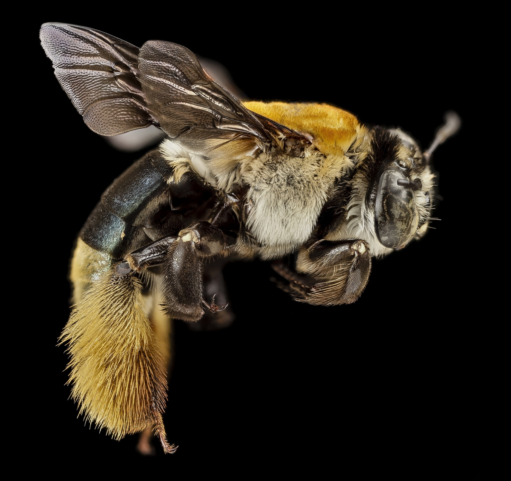
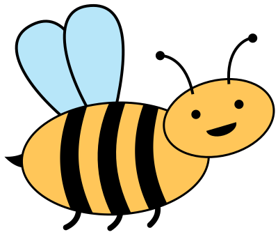

See the Pen Bee My Valentine Animation by Caitlin Haaf (@caitlinhaaf) on CodePen.
| Bitmap | Vector |
|---|---|

|

|
<svg width="100" height="100">
<circle cx="50" cy="50" r="40" stroke="green"
stroke-width="4" fill="yellow" />
</svg>
See the Pen Basic SVG Shapes by Caitlin Haaf (@caitlinhaaf) on CodePen.
<svg width="100" height="100">
<path d="M0,0 L50,50 C50,100 100,50, 100,100"
stroke="green" stroke-width="4" />
</svg>
Drawing curved SVG lines gets a bit more complicated - you have to include the positions of anchor points which will define the direciton of your curve.
See the Pen SVG Paths by Caitlin Haaf (@caitlinhaaf) on CodePen.
p{
color: red;
background-color: orange;
}
Used to scale, move, rotate, or even use 3D effects
#square{
transform: rotate(60deg);
}
#circle{
transform: scale(2);
}
We can combine CSS transformations by having them all on one line:
#triangle{
transform: translate(100px, 200px);
}
See the Pen Basic SVG Shapes by Caitlin Haaf (@caitlinhaaf) on CodePen.
It is possible to animate between different styles in CSS.
Before adding an animation to an element, we have to define the animation.
@keyframes fly {
0% {
transform: translateY(0%);
}
50% {
transform: translateY(-5%);
}
100% {
transform: translateY(0%);
}
}
When applying an animation to an element, we can define:
You can also define:
#bee {
animation: fly 4s infinite alternate;
}
See the Pen Basic SVG Shapes by Caitlin Haaf (@caitlinhaaf) on CodePen.
#bee {
offset-path: path('M20,20 C20,100 200,0 200,100');
animation: fly 3000ms ease-in-out;
}
@keyframes fly {
0% {
offset-distance: 0%;
}
100% {
offset-distance: 100%;
}
}
See the Pen Bee My Valentine Animation - Starter by Caitlin Haaf (@caitlinhaaf) on CodePen.
/